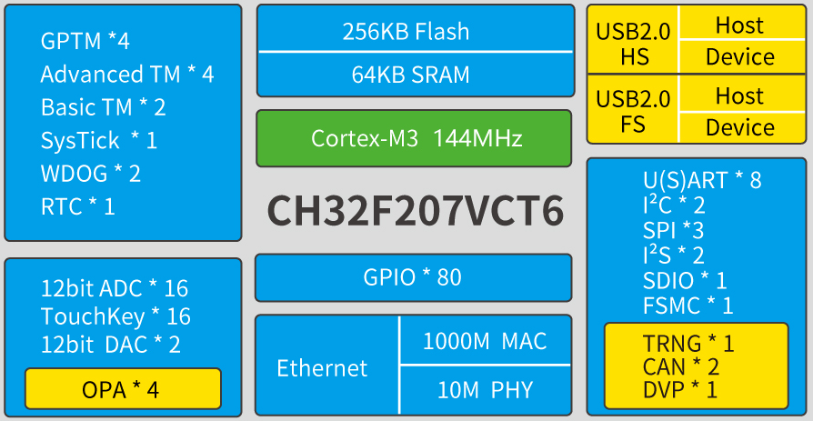

CH32F207¶
标签 : Cortex-M3 USB-HS-OTG(480Mbps) USB-FS-OTG 10Mbps(PHY) 1Gbps(MAC) CAN2.0B FSMC DVP SDIO
Xin简介¶
规格参数¶
主频高达144MHz，独立了GPIO电压（与系统供电分离）。资源同比增加了随机数单元，4组运放比较器；提高串口U(S)ART数量到8组，电机定时器到4组。搭配时钟安全、电源管理、双组DMA、DAC、SDIO、CAN、FSMC等资源。提供USB2.0高速接口（480Mbps）并内置了PHY收发器，以太网MAC升级到千兆并集成了10M-PHY模块。
基本参数¶
发布时间：
参考价格：
制程工艺：
供货周期：
处理性能：Level3
封装规格：LQFP64M/QFN68
运行环境：-40°C to 85°C
RAM容量：64 KB
Flash容量：256 KB
特征参数¶
芯片架构¶
UART |
SPI |
I2C |
ADC |
DAC |
SDIO |
||||
|---|---|---|---|---|---|---|---|---|---|
8 |
3 |
2 |
2(16ch) |
2 |
1 |
HS+FS |
2(2.0B) |
10M+1G |

功耗参数¶
连接能力¶
USB HS USB FS OTG CAN Ethernet
USB¶
USB HS 480Mbps(PHY)
CAN¶
CAN 2.0B
ETH¶
1000Mbps-MAC 10Mbps-PHY
Xin选择¶
品牌对比¶
USB HS（480Mbps内置PHY）和千兆以太网控制器ETH（内置10M PHY）这一配置是独一无二的，对于高集成度方案，此选项更优，暂无完全对标的产品
型号对比¶
SRAM/ROM |
More |
UART/SDIO |
USB |
|||
|---|---|---|---|---|---|---|
64K/256K |
DVP/FSMC |
8/1 |
FS(OTG)+HS(PHY) |
10M(PHY)+1G(MAC) |
100/68/64 |
|
64K/128K |
BLE5.3 |
4/0 |
2xUSB FS OTG |
10M(PHY) |
28/48/64/68 |
|
64K/128K |
BLE5.3 |
4/0 |
2xUSB FS OTG |
10M(PHY) |
28/48/64/68 |
|
64K/256K |
DVP/FSMC |
8/1 |
FS(OTG)+HS(PHY) |
10M(PHY)+1G(MAC) |
100/68/64 |
|
112K/512K |
HSPI/SerDes |
4/0 |
SS(PHY) |
1G(MAC) |
QFN68 |


版本对比¶

CH32F205¶
USB HS 480Mbps(PHY) SDIO
参考价格：
封装规格：LQFP64M
RAM容量：32 KB
Flash容量：256 KB